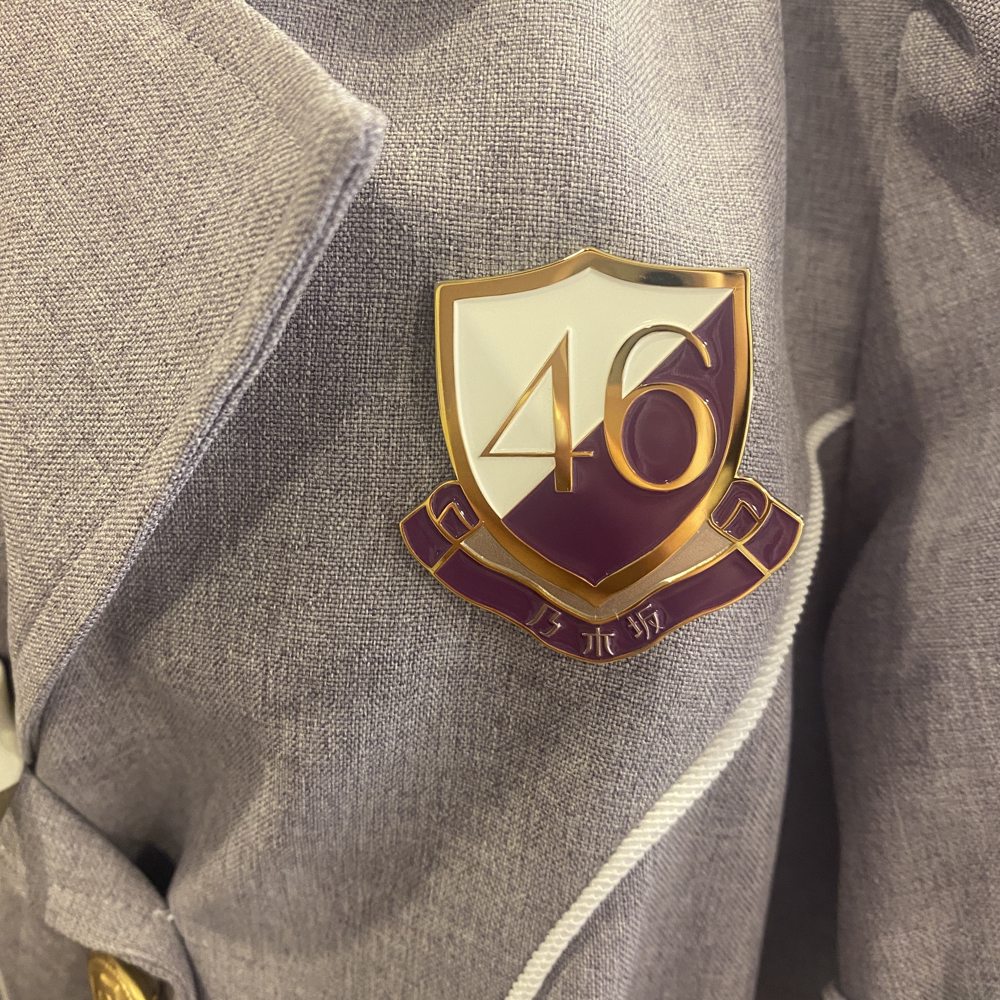

2021/0831Tueこれでおしまいです。ありがとう。
最後のブログです☺︎
約8年半本当にありがとうございました。
みなさんが
純奈ちゃんに出会ってお仕事も学校も
頑張れるようになったって、
お友達がたくさんできたって、
舞台のおもしろさを知ることができたって、
たくさん嬉しい言葉をかけてくれました。
じゅんは
みんながいたから頑張れたし、
大切でだいすきなメンバーができたし
自分が没頭できるお仕事に出会えました。
ファンのみなさんのおかげです。
ありがとう。
スタッフのみなさん
たくさんの道しるべを作ってくださって
ありがとうございました。
いつでも味方になってくれるスタッフさんが
いたからやりたい事もたくさんできました。
歌の楽しさを知れたのも舞台を知れたのも
スタッフのみなさんが導いてくれたからです。
感謝でいっぱいです。ありがとうございました！
メンバーのみんな！
無理せず自分らしく頑張りすぎなくて
いいんだからね☺︎じゅうぶん頑張ってるからね☺︎
ずっと見守ってるよ〜。
純奈を推していて楽しかったよ幸せだったよ
って言ってもらえて気持ちがすっきりしました☺︎
出会えてよかった。幸せだった！
みんな健康に気をつけてね。
これからもよろしくね。
また笑顔で会おうね〜

あーたのしかった！
夢のような時間でした！
またね！
2021.8.31
伊藤純奈
2021/08/31 19:00
コメント(1212)
こんにちは〜
、、ちょうど、、中学から、大学くらいの、期間だね〜
、、ゆっくり、、休んでね〜
、、ちょうど、、中学から、大学くらいの、期間だね〜
、、ゆっくり、、休んでね〜
卒業おめでとう。8年半お疲れ様でした。これからもいろいろなことに挑戦して頑張って下さい。
「美し過ぎる優秀過ぎる２期生」伊藤純奈様、ブログ更新ありがとうございました。ひと際ファン思いの純奈さんのことだから、最後にちゃんと更新してくれるに違いないと思っていました。ブログの表題の予想の「サヨナラの意味」は外れてしまいましたけねど。最後に照れが出たのかな。
それにしても、投稿が、気後れするぐらいのすごい勢いで、前のブログ投稿数を半日で、凌いでしまいましたね。ブログがアップされてからしばらくすると、投稿の勢いが落ちるのは仕方がないとしても、普段もう少しあっても良かったかなあと思います。いい年をしたおじさんのばかりが目立ってしまって、純奈さんには、申し訳なかったと思います。
投稿されている皆さんのハンドルネームが、そのまま握手会やミーグリでのあだ名だったりしていると思います。たくさんのファンにこれまでにお会いして、覚えきれていないとは思いますが、少しでも、ハンドルネームで顔を思い浮かべながら純奈愛溢れたブログをお読みいただけると幸いです。
ブログコメント投稿で純奈さんを応援することができ、本当に楽しい夢のような半年間でした。その純奈さんとミーグリで何回も直接お話ができたのは、本当にこの上ない贅沢なことでした。リアル握手会に参加できた古くならのファンの方が本当に羨ましい。握手したその手は、いつまで洗わないでいたのでしょうか。
これからは、胸を打つその歌声にさらに磨きをかけ、広く一般の方々も魅了してください。それにしても、純奈さんを知るきっかけとなった8th year birthday liveの映像作品では、正しく別格でしたね。乃木坂ファン以外の方々にも、是非とも視聴してほしいものです。生の迫力を味わうことができたファンの皆さんは、かけがえのないいい思い出でしょうね。
いつも自分よりも周りを気に掛けてしまう優しい純奈さん、これからは、自分のこともちゃんと顧みて、自分をもっともっと大切に。本当にありがとう。
それにしても、投稿が、気後れするぐらいのすごい勢いで、前のブログ投稿数を半日で、凌いでしまいましたね。ブログがアップされてからしばらくすると、投稿の勢いが落ちるのは仕方がないとしても、普段もう少しあっても良かったかなあと思います。いい年をしたおじさんのばかりが目立ってしまって、純奈さんには、申し訳なかったと思います。
投稿されている皆さんのハンドルネームが、そのまま握手会やミーグリでのあだ名だったりしていると思います。たくさんのファンにこれまでにお会いして、覚えきれていないとは思いますが、少しでも、ハンドルネームで顔を思い浮かべながら純奈愛溢れたブログをお読みいただけると幸いです。
ブログコメント投稿で純奈さんを応援することができ、本当に楽しい夢のような半年間でした。その純奈さんとミーグリで何回も直接お話ができたのは、本当にこの上ない贅沢なことでした。リアル握手会に参加できた古くならのファンの方が本当に羨ましい。握手したその手は、いつまで洗わないでいたのでしょうか。
これからは、胸を打つその歌声にさらに磨きをかけ、広く一般の方々も魅了してください。それにしても、純奈さんを知るきっかけとなった8th year birthday liveの映像作品では、正しく別格でしたね。乃木坂ファン以外の方々にも、是非とも視聴してほしいものです。生の迫力を味わうことができたファンの皆さんは、かけがえのないいい思い出でしょうね。
いつも自分よりも周りを気に掛けてしまう優しい純奈さん、これからは、自分のこともちゃんと顧みて、自分をもっともっと大切に。本当にありがとう。
じゅんちゃん！！
8年間お疲れ様でした！そのうちわたしが応援できたのは6年くらいだけど、サバサバしててかっこよくて、でもとっても可愛いじゅんちゃんを応援できて本当に嬉しかったです！！！！
じゅんちゃんだいすき！！！！！
これからのじゅんちゃんの未来が幸せであふれていますように、、
8年間お疲れ様でした！そのうちわたしが応援できたのは6年くらいだけど、サバサバしててかっこよくて、でもとっても可愛いじゅんちゃんを応援できて本当に嬉しかったです！！！！
じゅんちゃんだいすき！！！！！
これからのじゅんちゃんの未来が幸せであふれていますように、、
8年間お疲れ様でした！
これからの活躍、楽しみにしてます♪
もちろん体調にも気をつけて。
ずっと応援してます！
卒業おめでとう㊗️
これからの活躍、楽しみにしてます♪
もちろん体調にも気をつけて。
ずっと応援してます！
卒業おめでとう㊗️
文章感動しました。
お疲れさまでした！
お疲れさまでした！
純奈ありがとう。あなたがいたから頑張れました。これからも頑張ってください！応援してます！
長い間お疲れ様でした。
ありがとう
これからも応援してます。
ありがとう
これからも応援してます。
卒"おめでとう"！！!
ほんとうに 'おつかれ様'！！！！！
ほんとうに 'おつかれ様'！！！！！
純ちゃん、ありがとう。
3rdバスラのボーダーを観てから隠れ推ししていました。
初めて純ちゃんの握手会に行ったのはなんと、夜明けまで・・・の愛知全握です。ずいぶん長い間隠れていました❗そのあと、緊急事態宣言とかで、握手会に行けてないので、最初で最後の握手でしたね。みさ先輩推しでもあったので、三人姉妹は観ていましたよ。役に入り込んでいて感動しました。8thバスラでみさ先輩のソロ曲を唄ってくれたときは嬉しくて涙が止まりませんでした。
純ちゃんのご繁栄を祈ります。いや、これからも応援します。
3rdバスラのボーダーを観てから隠れ推ししていました。
初めて純ちゃんの握手会に行ったのはなんと、夜明けまで・・・の愛知全握です。ずいぶん長い間隠れていました❗そのあと、緊急事態宣言とかで、握手会に行けてないので、最初で最後の握手でしたね。みさ先輩推しでもあったので、三人姉妹は観ていましたよ。役に入り込んでいて感動しました。8thバスラでみさ先輩のソロ曲を唄ってくれたときは嬉しくて涙が止まりませんでした。
純ちゃんのご繁栄を祈ります。いや、これからも応援します。
ずんぅぅ～～
これからも頑張ってねぇ～～～
これからも頑張ってねぇ～～～
卒業おめでとう
私にとっても夢のような時間でした
ありがとう！
さみしい
私にとっても夢のような時間でした
ありがとう！
さみしい
も～う、じゅ～～～～～ん！
純奈さん今までお疲れ様でした。
これからも応援しています。
これからも応援しています。
長い間、お疲れさまでした。
純ちゃんの笑顔は可愛くて綺麗だったです。
これからも応援し続けます。
さらなる飛躍を期待しております。
純ちゃんの笑顔は可愛くて綺麗だったです。
これからも応援し続けます。
さらなる飛躍を期待しております。
最後のブログ更新お疲れ様です。
こんなに永くアイドルを推すことが出来たのは初めてでした。純奈のおかげで舞台やライブを見にいろんな所へ行けて幸せでした。
乃木坂46の伊藤純奈から女優・伊藤純奈に代わってもこれからも応援続けますね。
ホントに今まで楽しませてくれてありがとうね。
こんなに永くアイドルを推すことが出来たのは初めてでした。純奈のおかげで舞台やライブを見にいろんな所へ行けて幸せでした。
乃木坂46の伊藤純奈から女優・伊藤純奈に代わってもこれからも応援続けますね。
ホントに今まで楽しませてくれてありがとうね。
お疲れ様でした。
純奈の思い出は大阪のアンダラかな。
その時のパフォーマンスを見て、「そりゃこの子お芝居に呼ばれるわ」と思ったことです。
これからも舞台中心なのかな？
新しい世界でも頑張れ！！！
純奈の思い出は大阪のアンダラかな。
その時のパフォーマンスを見て、「そりゃこの子お芝居に呼ばれるわ」と思ったことです。
これからも舞台中心なのかな？
新しい世界でも頑張れ！！！
純ちゃん、お疲れさま、初めてあなたの舞台を見たのは確か犬夜叉だったと思います。圧倒的存在感の桔梗に衝撃でした。その後、三人姉妹、オリエント急行、七色いんこ、セラミュなどいろいろ見せていただきました。史緒里を可愛がってくれてありがとう。今後も期待しています。
卒業おめでとうございます。今までありがとう！
沢山の幸せをくれてありがとうございました。
純奈ちゃんのライブの時、かっこよかったです！
可愛い所、かっこいい所、いろんな純奈ちゃんが大好きです！
お疲れ様でした。
そして本当にありがとうございました！
純奈ちゃんのライブの時、かっこよかったです！
可愛い所、かっこいい所、いろんな純奈ちゃんが大好きです！
お疲れ様でした。
そして本当にありがとうございました！
純奈さん
乃木坂４６としての活動 お疲れ様でした。
たくさんの癒やしと喜びをありがとう。
私は特に
配信での
純奈さんの
楽しそうな表情が大好きでした。
今後は
多少でもプライベートに近い
脱力した感じの
純奈さんの
表情を見れる機会は
減ってしまうのでしょうねえ。
そこは残念ですが
これからもっともっと
純奈さんが
舞台など、個人の仕事で頑張って
活動広げていけるよう
お祈りしています
乃木坂４６としての活動 お疲れ様でした。
たくさんの癒やしと喜びをありがとう。
私は特に
配信での
純奈さんの
楽しそうな表情が大好きでした。
今後は
多少でもプライベートに近い
脱力した感じの
純奈さんの
表情を見れる機会は
減ってしまうのでしょうねえ。
そこは残念ですが
これからもっともっと
純奈さんが
舞台など、個人の仕事で頑張って
活動広げていけるよう
お祈りしています
純奈、卒業おめでとう。
そして、これからも応援するね。
卒業して何をしてても、
乃木坂のメンバーの幸せを祈っています。
くれぐれも、
身体には気をつけて頑張って下さいね。
一旦一区切り、
お疲れ様でした。
そして、これからも応援するね。
卒業して何をしてても、
乃木坂のメンバーの幸せを祈っています。
くれぐれも、
身体には気をつけて頑張って下さいね。
一旦一区切り、
お疲れ様でした。
純ちゃん卒業おめでとう。こうしてブログを見ると卒業したんだと実感がしました。今まで沢山楽しませていただいたから感謝しかない。新しい形でまた純ちゃんの顔が観れる事を期待したいし大好きな二期生は永遠です！純ちゃんがんばれ！！
おめでとう！
純奈ちゃんほんとうに8年半お疲れ様でした！
純奈ちゃんのこれからの人生も幸多い人生でありますように！
純奈ちゃんのこれからの人生も幸多い人生でありますように！
純奈ありがとうだいすきだー！！
ブログ更新ありがとう。
純奈ちゃん卒業おめでとう。
アイドルに興味なかった僕が、乃木坂を好きになって4年経ちました。
推しになって日は浅いけど本気で卒業が寂しいと思ったメンバーは純奈ちゃんが初めてです。
かっこいい純奈ちゃんも可愛い純奈ちゃんも大好きです。
純奈ちゃん推しになれて幸せでした。
本当にありがとう。
純奈ちゃん卒業おめでとう。
アイドルに興味なかった僕が、乃木坂を好きになって4年経ちました。
推しになって日は浅いけど本気で卒業が寂しいと思ったメンバーは純奈ちゃんが初めてです。
かっこいい純奈ちゃんも可愛い純奈ちゃんも大好きです。
純奈ちゃん推しになれて幸せでした。
本当にありがとう。
卒業おめでとう。
これからも自分の道を突き進んで下さい。
これからも自分の道を突き進んで下さい。
純奈、おはよう。。。。。
最後のブログ ありがとう、、、
☆最後のモバメもたくさんありがとう !!
過去を振り返る形で、
たくさんの写真つきメールをいただきました。
画質は厳しいけれど、気持ちは十分伝わったよ、、、
「のぎ動画」等々も使って、私も review してみます。
☆改めて、卒業おめでとう !!
8年半、お疲れ様でした。
私は、2014年からだから、
約7年、ありがとうございました。
29日の最後のミーグリでお話ししたことは、
「永遠の記憶」として留めておきます。
最初は、個握のどこかにチケットを取って、
純奈と握手して、
舞台とかお芝居のお話しして、帰宅する
というパターンでした。
それが、楽しくて、楽しくて、前の部も、次の部も、と拡大して
個握をやっていた、後半の３年くらいは、
全５部に通うようになっていました。
本当に楽しい時間と握手と会話をありがとうございました。
ミーグリもたくさんしたけれど、
でも、いつか、また会ってお話ししたい。
※いろいろな連絡手段があると思うけれど、
私は、愛未ちゃんがやっている、
メルマガがやりやすいかな ?
舞台のお知らせ、お稽古の状況とか、心境とか、、、
私にとっても、楽しい、乃木坂ライフでしたよ、、、、
純奈は、唯一無二の存在、
でも、これからは一人なので、
何と言っても、『健康第一』です。
東京の第５波はさらに急拡大中? 少し停滞中? です。
４回目の『緊急事態宣言』も拡大延長されています。
くれぐれも身体を大切にしてくださいね。。。。。
熱中症にも気をつけよう !!
最後のブログ ありがとう、、、
☆最後のモバメもたくさんありがとう !!
過去を振り返る形で、
たくさんの写真つきメールをいただきました。
画質は厳しいけれど、気持ちは十分伝わったよ、、、
「のぎ動画」等々も使って、私も review してみます。
☆改めて、卒業おめでとう !!
8年半、お疲れ様でした。
私は、2014年からだから、
約7年、ありがとうございました。
29日の最後のミーグリでお話ししたことは、
「永遠の記憶」として留めておきます。
最初は、個握のどこかにチケットを取って、
純奈と握手して、
舞台とかお芝居のお話しして、帰宅する
というパターンでした。
それが、楽しくて、楽しくて、前の部も、次の部も、と拡大して
個握をやっていた、後半の３年くらいは、
全５部に通うようになっていました。
本当に楽しい時間と握手と会話をありがとうございました。
ミーグリもたくさんしたけれど、
でも、いつか、また会ってお話ししたい。
※いろいろな連絡手段があると思うけれど、
私は、愛未ちゃんがやっている、
メルマガがやりやすいかな ?
舞台のお知らせ、お稽古の状況とか、心境とか、、、
私にとっても、楽しい、乃木坂ライフでしたよ、、、、
純奈は、唯一無二の存在、
でも、これからは一人なので、
何と言っても、『健康第一』です。
東京の第５波はさらに急拡大中? 少し停滞中? です。
４回目の『緊急事態宣言』も拡大延長されています。
くれぐれも身体を大切にしてくださいね。。。。。
熱中症にも気をつけよう !!
じゃんなさん
卒業おめでとうございます。
今までお疲れ様でした。
たくさん楽しい時間を作ってくれて、
本当にありがとうございます。
これからも頑張ってください！！
卒業おめでとうございます。
今までお疲れ様でした。
たくさん楽しい時間を作ってくれて、
本当にありがとうございます。
これからも頑張ってください！！
ありがとう、元気でね。
卒業おめでとう＼(^o^)／出逢えて良かった(^o^)これからもよろしく(^o^)
純奈の歌声は、１番だとずっと思っています。
2期生として加入して8年半、うまくいかないこともたくさんあったと思います。
それでも、純奈はいつも笑顔で頑張っていましたね。
そんな姿を見てると、僕はなんて小さいことで悩んでいるんだと思うようになりました。
こんな僕に、たくさんの優しい言葉や、元気づける言葉をかけてくれる、純奈がいたから頑張れました。
これからは、もう話すことはできなくなってしまうけど、純奈の言葉を時々思い出して、頑張って行こうと思っています。
純奈みたいな立派な大人になるからね。
8年半、本当にお疲れ様でした。
純奈を応援していた時間は最高の時間でした。
たくさんの幸せや希望、勇気をくれて本当にありがとうございました。
2期生として加入して8年半、うまくいかないこともたくさんあったと思います。
それでも、純奈はいつも笑顔で頑張っていましたね。
そんな姿を見てると、僕はなんて小さいことで悩んでいるんだと思うようになりました。
こんな僕に、たくさんの優しい言葉や、元気づける言葉をかけてくれる、純奈がいたから頑張れました。
これからは、もう話すことはできなくなってしまうけど、純奈の言葉を時々思い出して、頑張って行こうと思っています。
純奈みたいな立派な大人になるからね。
8年半、本当にお疲れ様でした。
純奈を応援していた時間は最高の時間でした。
たくさんの幸せや希望、勇気をくれて本当にありがとうございました。
じゅんちゃん卒業おめでとう！
8年間お疲れ様でした。
乃木坂でのじゅんちゃんの歌、パフォーマンス、大好きでした！
何度も救われました。ありがとう！
じゅんちゃん推してて楽しかった！！だいすき！！！！！
しあわせになってね！今まで本当にありがとう！
8年間お疲れ様でした。
乃木坂でのじゅんちゃんの歌、パフォーマンス、大好きでした！
何度も救われました。ありがとう！
じゅんちゃん推してて楽しかった！！だいすき！！！！！
しあわせになってね！今まで本当にありがとう！
じゅんなちゃん、ありがとうね。
乃木坂46にいてくれて。
これからも応援してます。
また会う日まで！
乃木坂46にいてくれて。
これからも応援してます。
また会う日まで！
乃木坂に入ってくれてありがとう！
お疲れ様
お疲れ様
いままでありがとう！
大好きだよ！
大好きだよ！
本当にありがとう
お疲れ様
お疲れ様
卒業おめでとう㊗️
お疲れ様でした。
ありがとう
これからも応援してます
お疲れ様でした。
ありがとう
これからも応援してます
こちらこそありがとう！卒業おめでとう！
激動の10代、そして今日まで大変お疲れ様でした。
また何処かで会いましょう。
ありがとうございました。お疲れ様でした。
ありがとうございました。お疲れ様でした。
お疲れ様でした
純奈様最後のブログ更新有り難うございます
スイカメンバーのショールーム配信とか、みりあちゃんとの配信楽しみでした。密かに、スイカメンバーの配信も、期待してたのですが、幹事入院とかで、大変そうでしたからね
YouTube期待してます 男前の純奈様に、嫉妬してました 最後も、男前でしたね 流石です。
これからのご活躍期待してます お疲れ様でした
スイカメンバーのショールーム配信とか、みりあちゃんとの配信楽しみでした。密かに、スイカメンバーの配信も、期待してたのですが、幹事入院とかで、大変そうでしたからね
YouTube期待してます 男前の純奈様に、嫉妬してました 最後も、男前でしたね 流石です。
これからのご活躍期待してます お疲れ様でした
じゅんなさん、卒業おめございます。
じゅんなさんのラジオや舞台、最高でした。
これからも応援し続けます！
お疲れ様でした！！
じゅんなさんのラジオや舞台、最高でした。
これからも応援し続けます！
お疲れ様でした！！
お疲れ様でした！ありがとう！
じゅんなちゃん卒業おめでとう
そしてお疲れ様でした！
じゅんなちゃんの歌声がとっても好きでそれが聞けなくなると寂しいなと思いますがこれからもじゅんなちゃんらしく頑張ってください！
じゅんなちゃんの未来が明るくて幸せでありますように！
そしてお疲れ様でした！
じゅんなちゃんの歌声がとっても好きでそれが聞けなくなると寂しいなと思いますがこれからもじゅんなちゃんらしく頑張ってください！
じゅんなちゃんの未来が明るくて幸せでありますように！
純奈ちゃんへ
卒業おめでとうございます！
乃木坂を知ってからずっと純奈ちゃん推しで、ほんとに純奈ちゃんのかっこいい部分可愛い部分がほんとに大好きです！
握手会は高校生の頃とかだったので行けなくて、ミーグリは参加でき、純奈ちゃんに名前呼んでもらえたのほんとに嬉しかったです。
またいつか純奈ちゃんに会える日を楽しみにしてます！
純奈ちゃん推しでほんとに良かった！これからも推し続けます！
これからも頑張ってください、応援してます！
本当に大好きです！！
卒業おめでとうございます！
乃木坂を知ってからずっと純奈ちゃん推しで、ほんとに純奈ちゃんのかっこいい部分可愛い部分がほんとに大好きです！
握手会は高校生の頃とかだったので行けなくて、ミーグリは参加でき、純奈ちゃんに名前呼んでもらえたのほんとに嬉しかったです。
またいつか純奈ちゃんに会える日を楽しみにしてます！
純奈ちゃん推しでほんとに良かった！これからも推し続けます！
これからも頑張ってください、応援してます！
本当に大好きです！！
まずは卒業おめでとう。
純奈の歌とか、舞台で頑張ってる姿とか、自分のことじゅんって呼んでるところとか、めっちゃ鋭いツッコミしてるところとか、すごくすごく可愛くてなんでもっと早く知らなかったんだろうっていつも思う。
それは悔やんで仕方ないけど、悔やんでも仕方ないし、これからも純奈らしく頑張ってくれたらずっと応援してるよ。
がんばれ！だいすき！
純奈の歌とか、舞台で頑張ってる姿とか、自分のことじゅんって呼んでるところとか、めっちゃ鋭いツッコミしてるところとか、すごくすごく可愛くてなんでもっと早く知らなかったんだろうっていつも思う。
それは悔やんで仕方ないけど、悔やんでも仕方ないし、これからも純奈らしく頑張ってくれたらずっと応援してるよ。
がんばれ！だいすき！


じゅんちゃんの歌声大好き！また聞けたらいいな〜
これからも応援してます！！